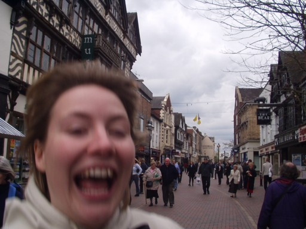
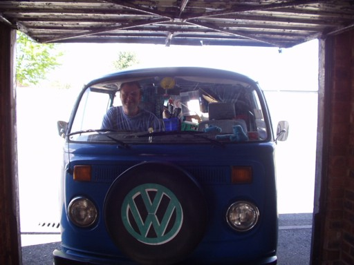

back

Neither of us are actually from Stafford, I must have lived here for four years, and Helen for two. But it's a good a place as any to call home-as we've moved around quite a bit-and actually bought our house here.
So what about our stuff? I own an old 1977 VW campervan called 'Jasper', and he is to be the home of our belongings for the next year. The idea was to fill him with our stuff, thus causing the suspension to lower enough to allow him to fit in the garage. Unfortunately, he was still too high for the garage door and so we had to let the tyres down before he begrudgingly made it. 
We left our jobs, though the University where I work allowed me to take a year off as unpaid leave (thankyou).